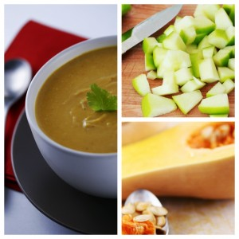

Butter Nut Squash & Apple Soup with Indian Spices
Ingredients
2 lbs (1 kg) butternut squash, peeled and diced3 tablespoons unsalted butter
1 small onion, chopped
.5 teaspoon fennel seeds
2 garlic cloves smashed
1 2-inch piece ginger, peeled and grated
1/4 teaspoon freshly grated nutmeg, plus more for garnish
.25 teaspoon turmeric
.5 teaspoon cumin powder
.5 teaspoon coriander powder
1 teaspoon garam masala powder
Kosher salt and freshly ground pepper
2 cups vegetable broth or water
1 1/4 cups chunky apple sauce
1 green apple, diced
1 tablespoon apple cider vinegar
1 to 2 tablespoons chopped fresh cilantro
Preparation Method
Preheat the oven to 425 degrees F. Peel and dice butternut squash. Melt 2 tablespoons of butter in a large pot over medium heat. Add the onion, fennel seeds and garlic and cook until soft, about 5 minutes. Stir in the ginger, nutmeg, turmeric, cumin, coriander garam masala, and salt and pepper to taste and cook until toasted, 1 more minute. Add the diced butternut squash, broth and 2 cups water to the pot, cover and bring to a boil over medium-high heat. Reduce the heat to medium low and stir in the applesauce. Simmer, covered, until the squash is soft, about 20 minutes. Puree the soup with a blender until smooth. Season with salt and pepper; keep warm. Peel , core and dice the apple, heat the remaining 1 tablespoon butter in a skillet over medium heat. Add the apples, stirring, until browned; remove from the heat and add the vinegar. Top with the cilantro. Fold the mixture into the soup and serve hot.